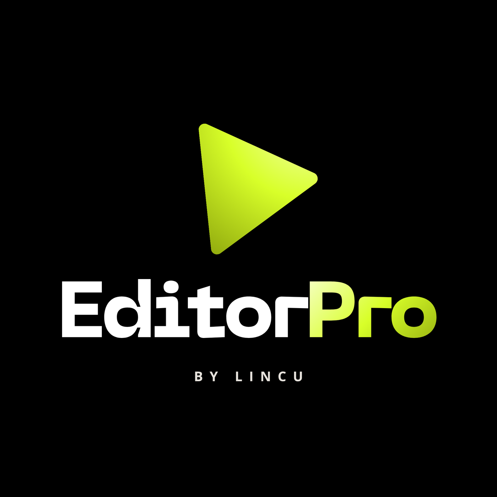
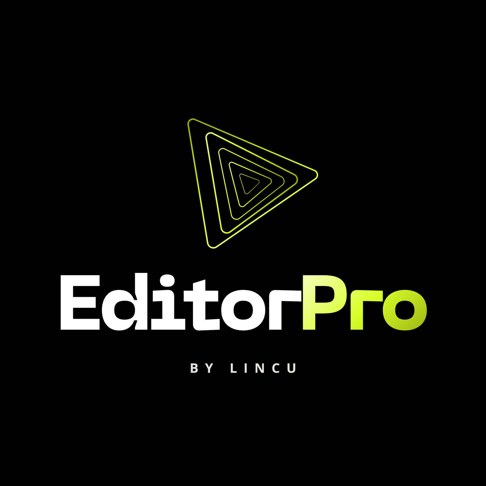
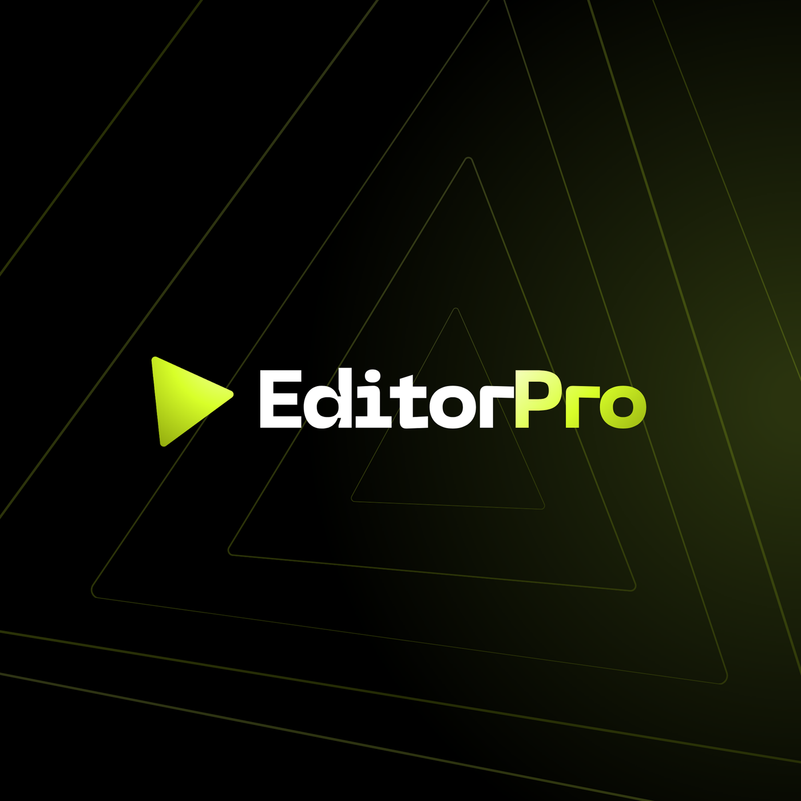
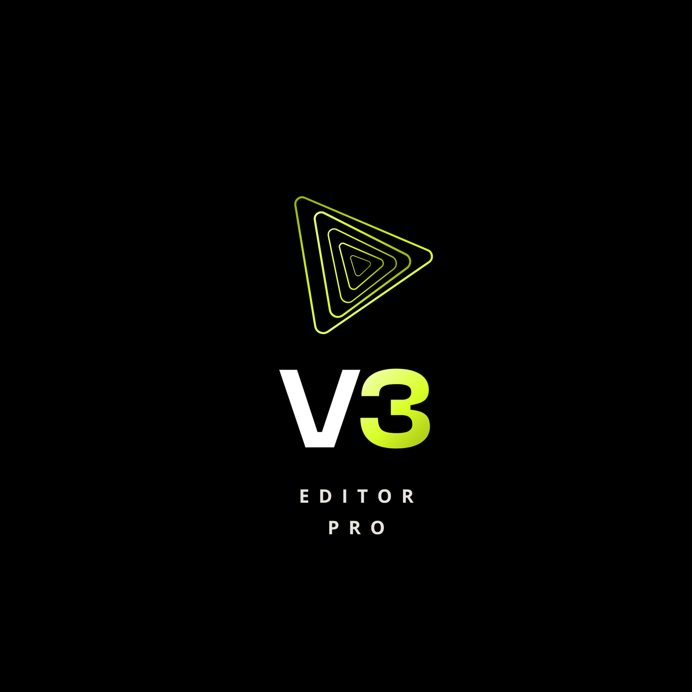
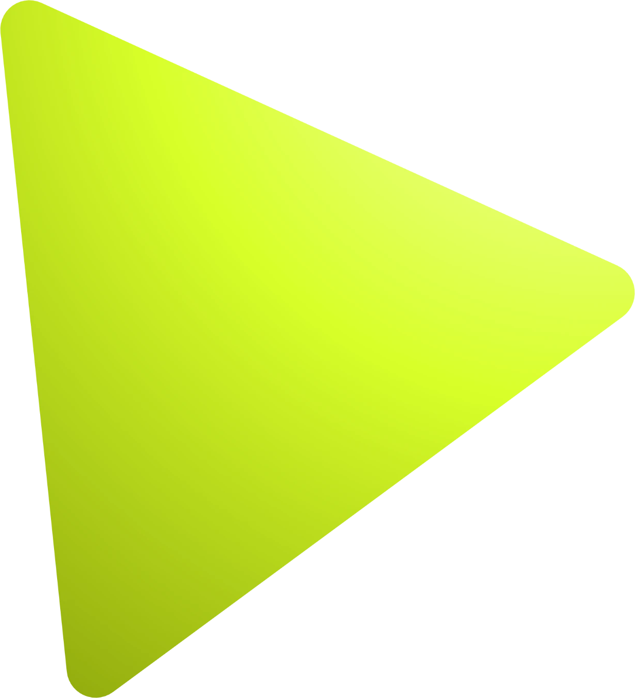
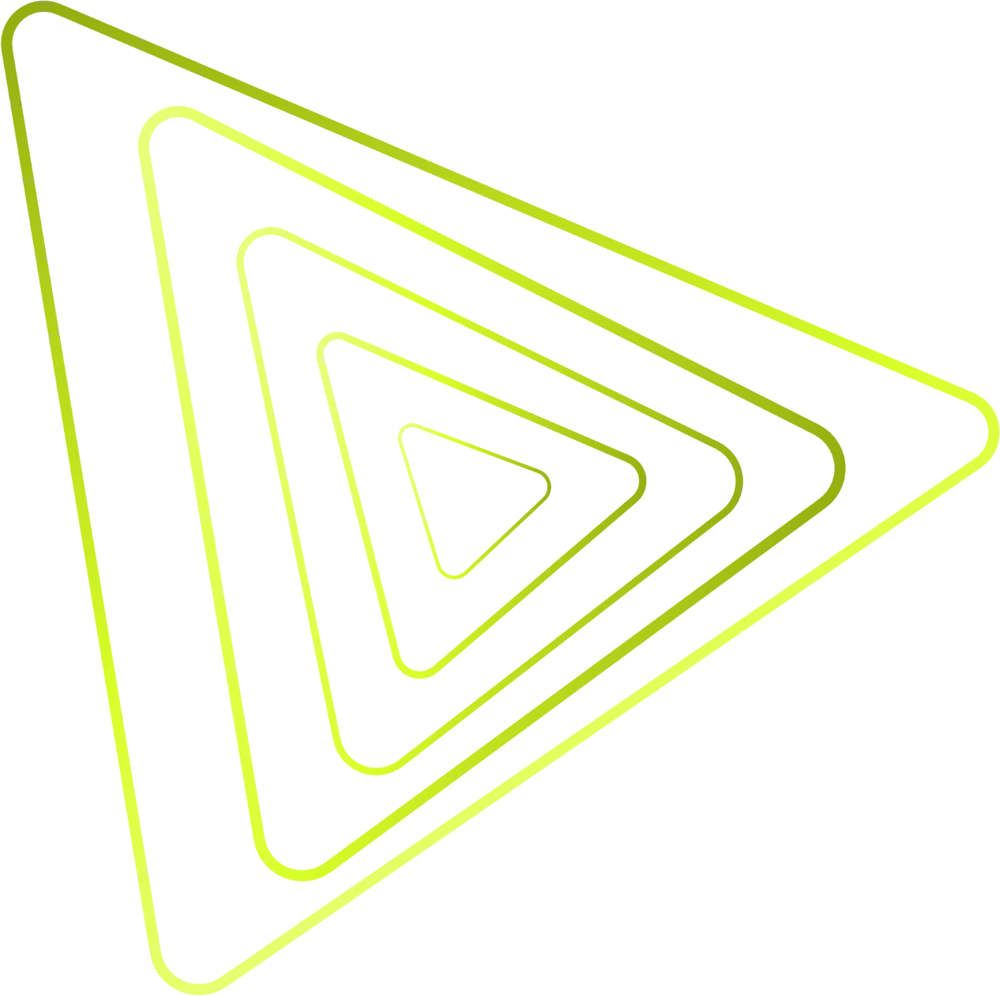

<title>Brandbook EditorPro</title>
<meta name="claude:viewport-fit-sides" content="cover">
<link rel="preconnect" href="https://fonts.googleapis.com">
<link rel="preconnect" href="https://fonts.gstatic.com" crossorigin>
<link rel="stylesheet" href="https://fonts.googleapis.com/css2?family=Bricolage+Grotesque:opsz,wght@12..96,400;12..96,500;12..96,700;12..96,800&display=swap">
<style>
  /* Layout: uma coluna escura, seções empilhadas, a marca em lima como único destaque. Tema único (escuro) de propósito. */
  :root {
    --preto: #000000;
    --superficie: #0b0d05;
    --borda: rgba(216, 255, 41, 0.18);
    --lima: #d8ff29;
    --lima-claro: #efffad;
    --lima-escuro: #9aae12;
    --oliva: #2b3510;
    --branco: #ffffff;
    --areia: #e6e2dc;
    --cinza: #8d927c;
    --fonte: 'Bricolage Grotesque', 'Segoe UI', system-ui, sans-serif;
    --degrade: linear-gradient(135deg, var(--lima-claro) 0%, var(--lima) 45%, var(--lima-escuro) 100%);
    color-scheme: dark;
  }
  * { box-sizing: border-box; }
  body {
    margin: 0; background: var(--preto); color: var(--areia);
    font-family: var(--fonte); font-size: 17px; line-height: 1.5;
    -webkit-font-smoothing: antialiased;
  }
  .pagina {
    max-width: 1080px; margin: 0 auto;
    padding-left: max(20px, env(safe-area-inset-left, 0px));
    padding-right: max(20px, env(safe-area-inset-right, 0px));
    padding-block: 0 80px;
  }
  .capa {
    position: relative; overflow: hidden;
    margin-top: calc(-1 * env(safe-area-inset-top, 0px));
    padding-top: calc(env(safe-area-inset-top, 0px) + 72px); padding-bottom: 72px;
    background: radial-gradient(ellipse 70% 90% at 85% 60%, rgba(66, 82, 16, 0.75), transparent 70%), var(--preto);
  }
  .capa .pagina { padding-block: 0; display: grid; gap: 28px; }
  .capa img.logo { width: min(460px, 100%); }
  .capa h1 { margin: 0; font-weight: 800; font-size: clamp(44px, 8vw, 88px); line-height: 0.95; letter-spacing: -0.03em; color: var(--branco); text-wrap: balance; }
  .capa p { margin: 0; max-width: 56ch; font-size: 19px; }
  .lima { background: var(--degrade); -webkit-background-clip: text; background-clip: text; color: transparent; }

  section { padding-top: 72px; display: grid; gap: 28px; }
  .rotulo { font-weight: 700; font-size: 13px; letter-spacing: 0.35em; text-transform: uppercase; color: var(--lima); }
  h2 { margin: 0; font-weight: 800; font-size: clamp(32px, 5vw, 48px); line-height: 1; letter-spacing: -0.03em; color: var(--branco); }
  h3 { margin: 0; font-weight: 700; font-size: 20px; color: var(--branco); }
  .intro { margin: 0; max-width: 62ch; }
  .cabeca { display: grid; gap: 10px; }

  .grade { display: grid; gap: 16px; grid-template-columns: repeat(auto-fit, minmax(220px, 1fr)); }
  .grade-2 { display: grid; gap: 16px; grid-template-columns: repeat(auto-fit, minmax(300px, 1fr)); }
  .caixa { background: var(--superficie); border: 1px solid var(--borda); border-radius: 22px; padding: 22px; display: grid; gap: 10px; align-content: start; min-width: 0; }
  .caixa p { margin: 0; font-size: 15px; color: var(--cinza); }
  .vitrine { border-radius: 16px; overflow: hidden; aspect-ratio: 1 / 1; display: grid; place-items: center; background: var(--preto); }
  .vitrine.clara { background: var(--branco); }
  .vitrine img { width: 100%; height: 100%; object-fit: contain; }
  .vitrine.pad img { width: 62%; height: 62%; }

  .cor { border-radius: 22px; overflow: hidden; border: 1px solid var(--borda); background: var(--superficie); min-width: 0; }
  .cor .amostra { height: 120px; }
  .cor .info { padding: 16px 18px 18px; display: grid; gap: 4px; }
  .cor .nome { font-weight: 700; color: var(--branco); }
  .cor .uso { font-size: 14px; color: var(--cinza); }
  .copiar {
    justify-self: start; margin-top: 6px; font: 700 14px/1 var(--fonte); letter-spacing: 0.04em;
    color: var(--lima); background: transparent; border: 1px solid var(--borda); border-radius: 999px; padding: 8px 14px; cursor: pointer;
    font-variant-numeric: tabular-nums;
  }
  .copiar:hover, .copiar:focus-visible { border-color: var(--lima); outline: none; }
  .degrade-faixa { height: 120px; border-radius: 22px; background: var(--degrade); }

  .tipo-grande { font-weight: 800; font-size: clamp(56px, 12vw, 140px); line-height: 0.9; letter-spacing: -0.04em; color: var(--branco); }
  .escala { display: grid; gap: 0; border-top: 1px solid var(--borda); }
  .linha-escala { display: grid; grid-template-columns: 170px 1fr; gap: 16px; align-items: baseline; padding: 18px 0; border-bottom: 1px solid var(--borda); }
  .linha-escala .meta { font-size: 13px; color: var(--cinza); font-variant-numeric: tabular-nums; }
  .linha-escala .ex { min-width: 0; color: var(--branco); overflow-wrap: anywhere; }
  .ex.t1 { font-weight: 800; font-size: clamp(40px, 6vw, 72px); line-height: 1; letter-spacing: -0.03em; }
  .ex.t2 { font-weight: 800; font-size: 36px; line-height: 1.05; letter-spacing: -0.02em; }
  .ex.t3 { font-weight: 800; font-size: 28px; letter-spacing: -0.01em; }
  .ex.t4 { font-weight: 500; font-size: 18px; color: var(--areia); }
  .ex.t5 { font-weight: 700; font-size: 13px; letter-spacing: 0.5em; text-transform: uppercase; color: var(--cinza); }

  .pilula { justify-self: start; font-weight: 800; font-size: 16px; letter-spacing: 0.04em; padding: 6px 16px; border-radius: 999px; border: 1.5px solid rgba(216, 255, 41, 0.75); color: var(--lima); }
  .card-ex { border-radius: 22px; padding: 22px; border: 1px solid rgba(216, 255, 41, 0.22); background: linear-gradient(180deg, rgba(255,255,255,0.07), rgba(255,255,255,0.02)); display: grid; gap: 6px; }
  .card-ex .n { font-weight: 800; font-size: 48px; line-height: 1; }
  .card-ex .t { font-weight: 800; font-size: 24px; color: var(--branco); margin-top: 18px; }
  .card-ex .d { font-size: 15px; }
  .brilho { height: 160px; border-radius: 16px; background: radial-gradient(ellipse 70% 90% at 70% 60%, rgba(66, 82, 16, 0.85), transparent 70%), var(--preto); border: 1px solid var(--borda); }
  .triang { height: 160px; border-radius: 16px; background: var(--preto); border: 1px solid var(--borda); overflow: hidden; }
  .triang svg { width: 100%; height: 100%; display: block; }
  .triang path { fill: none; stroke: var(--lima); stroke-linejoin: round; }

  ul.lista { margin: 0; padding: 0; list-style: none; display: grid; gap: 10px; }
  ul.lista li { display: grid; grid-template-columns: 22px 1fr; gap: 8px; font-size: 15px; }
  .sim::before { content: "✓"; color: var(--lima); font-weight: 800; }
  .nao::before { content: "✕"; color: var(--cinza); font-weight: 800; }
  .frase { font-weight: 500; font-size: 18px; color: var(--branco); }
  .frase.ruim { color: var(--cinza); text-decoration: line-through; text-decoration-color: rgba(141,146,124,0.6); }

  .arquivos { overflow-x: auto; }
  table { width: 100%; border-collapse: collapse; font-size: 15px; }
  th, td { text-align: left; padding: 12px 10px; border-bottom: 1px solid var(--borda); vertical-align: top; }
  th { font-weight: 700; font-size: 13px; letter-spacing: 0.2em; text-transform: uppercase; color: var(--cinza); }
  code { font-family: ui-monospace, 'Cascadia Code', Consolas, monospace; font-size: 14px; color: var(--lima-claro); }

  footer { padding-top: 72px; font-weight: 700; font-size: 13px; letter-spacing: 0.5em; color: var(--cinza); }

  @media (max-width: 560px) {
    .linha-escala { grid-template-columns: 1fr; gap: 6px; }
  }
  @media (prefers-reduced-motion: reduce) { * { transition: none !important; } }
</style>

<header class="capa">
  <div class="pagina">
    
    <h1>Brandbook <span class="lima">V3</span></h1>
    <p>As regras de marca do EditorPro: logo, cores, tipografia, elementos e o jeito de escrever. Use esta página sempre que fizer banner, post, slide ou imagem para o plugin.</p>
  </div>
</header>

<main class="pagina">

  <section id="logo">
    <div class="cabeca">
      <span class="rotulo">01 · Logo</span>
      <h2>A marca</h2>
      <p class="intro">O símbolo é um play em triângulo, com cantos arredondados e o degradê lima. O nome junta “Editor” em branco e “Pro” em lima. A assinatura “BY LINCU” vem embaixo, espaçada.</p>
    </div>
    <div class="grade">
      <div class="caixa"><div class="vitrine"></div><h3>Principal</h3><p>Símbolo cheio sobre preto. Use na maioria dos casos.</p></div>
      <div class="caixa"><div class="vitrine"></div><h3>Linhas</h3><p>Símbolo em triângulos concêntricos. Para capas e peças mais leves.</p></div>
      <div class="caixa"><div class="vitrine"></div><h3>Horizontal</h3><p>Símbolo ao lado do nome. Para banners e espaços largos.</p></div>
      <div class="caixa"><div class="vitrine"></div><h3>Selo da versão</h3><p>Para anunciar uma versão nova. Troque só o número.</p></div>
      <div class="caixa"><div class="vitrine pad"></div><h3>Símbolo</h3><p>Sozinho em ícones, avatar e favicon.</p></div>
      <div class="caixa"><div class="vitrine clara pad"></div><h3>Símbolo em linhas</h3><p>Também funciona sobre fundo claro.</p></div>
    </div>
    <div class="grade-2">
      <div class="caixa">
        <h3>Faça</h3>
        <ul class="lista">
          <li class="sim">Use a logo sobre preto ou sobre o fundo oliva da marca.</li>
          <li class="sim">Deixe em volta da logo um respiro de pelo menos a altura do “E”.</li>
          <li class="sim">No digital, mantenha o nome com no mínimo 120 px de largura.</li>
        </ul>
      </div>
      <div class="caixa">
        <h3>Evite</h3>
        <ul class="lista">
          <li class="nao">Redigitar “EditorPro” com a fonte. Use sempre o arquivo da logo.</li>
          <li class="nao">Trocar as cores, esticar, girar ou pôr sombra na logo.</li>
          <li class="nao">Usar a logo branca sobre foto clara ou fundo lima.</li>
        </ul>
      </div>
    </div>
  </section>

  <section id="cores">
    <div class="cabeca">
      <span class="rotulo">02 · Cores</span>
      <h2>Paleta</h2>
      <p class="intro">Preto é o fundo. Lima é o destaque, usado com moderação: em uma palavra do título, no símbolo, nas bordas e nos números. Branco e areia ficam com o texto.</p>
    </div>
    <div class="grade">
      <div class="cor"><div class="amostra" style="background:#d8ff29"></div><div class="info"><span class="nome">Lima</span><span class="uso">Cor principal da marca, destaques</span><button class="copiar" data-hex="#D8FF29">#D8FF29</button></div></div>
      <div class="cor"><div class="amostra" style="background:#efffad"></div><div class="info"><span class="nome">Lima claro</span><span class="uso">Início do degradê, brilho</span><button class="copiar" data-hex="#EFFFAD">#EFFFAD</button></div></div>
      <div class="cor"><div class="amostra" style="background:#9aae12"></div><div class="info"><span class="nome">Lima escuro</span><span class="uso">Fim do degradê, sombra do lima</span><button class="copiar" data-hex="#9AAE12">#9AAE12</button></div></div>
      <div class="cor"><div class="amostra" style="background:#000000;border-bottom:1px solid rgba(216,255,41,0.18)"></div><div class="info"><span class="nome">Preto</span><span class="uso">Fundo de tudo</span><button class="copiar" data-hex="#000000">#000000</button></div></div>
      <div class="cor"><div class="amostra" style="background:#2b3510"></div><div class="info"><span class="nome">Oliva</span><span class="uso">Brilho de fundo, linhas suaves</span><button class="copiar" data-hex="#2B3510">#2B3510</button></div></div>
      <div class="cor"><div class="amostra" style="background:#ffffff"></div><div class="info"><span class="nome">Branco</span><span class="uso">Títulos e “Editor” do nome</span><button class="copiar" data-hex="#FFFFFF">#FFFFFF</button></div></div>
      <div class="cor"><div class="amostra" style="background:#e6e2dc"></div><div class="info"><span class="nome">Areia</span><span class="uso">Texto corrido, “BY LINCU”</span><button class="copiar" data-hex="#E6E2DC">#E6E2DC</button></div></div>
      <div class="cor"><div class="amostra" style="background:#8d927c"></div><div class="info"><span class="nome">Cinza oliva</span><span class="uso">Legendas e rótulos discretos</span><button class="copiar" data-hex="#8D927C">#8D927C</button></div></div>
    </div>
    <div class="caixa">
      <div class="degrade-faixa" role="img" aria-label="Degradê lima"></div>
      <h3>Degradê lima</h3>
      <p>135°: lima claro (0%) → lima (45%) → lima escuro (100%). Use no símbolo, no “Pro” e em palavras de destaque.</p>
      <code>linear-gradient(135deg, #EFFFAD 0%, #D8FF29 45%, #9AAE12 100%)</code>
    </div>
  </section>

  <section id="tipografia">
    <div class="cabeca">
      <span class="rotulo">03 · Tipografia</span>
      <h2>Bricolage Grotesque</h2>
      <p class="intro">Uma fonte só, em três pesos. Grátis (licença OFL), no Google Fonts e salva no repositório em <code>assets/marca/fonte/</code>.</p>
    </div>
    <div class="tipo-grande">Aa <span class="lima">Rr</span> 123</div>
    <div class="escala">
      <div class="linha-escala"><span class="meta">Título · ExtraBold 800<br>espaço −3%</span><span class="ex t1">Edite seus <span class="lima">Reels</span></span></div>
      <div class="linha-escala"><span class="meta">Subtítulo · ExtraBold 800<br>espaço −2%</span><span class="ex t2">O que deixa o vídeo premium</span></div>
      <div class="linha-escala"><span class="meta">Destaque · ExtraBold 800</span><span class="ex t3">Organiza · Planeja · Edita</span></div>
      <div class="linha-escala"><span class="meta">Texto · Medium 500</span><span class="ex t4">Você manda os vídeos brutos. Ele entrega o Reels pronto.</span></div>
      <div class="linha-escala"><span class="meta">Rótulo · Bold 700<br>caixa alta, espaço +50%</span><span class="ex t5">By Lincu</span></div>
    </div>
  </section>

  <section id="elementos">
    <div class="cabeca">
      <span class="rotulo">04 · Elementos</span>
      <h2>Peças da identidade</h2>
      <p class="intro">Poucas peças, sempre as mesmas. Elas fazem qualquer imagem parecer do EditorPro.</p>
    </div>
    <div class="grade">
      <div class="caixa">
        <div class="triang"><svg viewBox="0 0 200 100" preserveAspectRatio="xMidYMid slice"><g transform="translate(120 50)">
          <path d="M-26 -38 L40 0 L-26 38 Z" transform="rotate(-8) scale(1.6)" stroke-width="0.8" opacity="0.35"/>
          <path d="M-26 -38 L40 0 L-26 38 Z" transform="rotate(-8) scale(1.15)" stroke-width="0.8" opacity="0.5"/>
          <path d="M-26 -38 L40 0 L-26 38 Z" transform="rotate(-8) scale(0.75)" stroke-width="0.7" opacity="0.4"/>
          <path d="M-26 -38 L40 0 L-26 38 Z" transform="rotate(-8) scale(0.4)" stroke-width="0.6" opacity="0.3"/>
        </g></svg></div>
        <h3>Triângulos em linha</h3>
        <p>O play repetido em contornos finos. Fica no fundo, cortado pela borda, com pouca opacidade.</p>
      </div>
      <div class="caixa">
        <div class="brilho"></div>
        <h3>Brilho oliva</h3>
        <p>Um brilho radial oliva num canto do fundo preto. Nunca mais de um por peça.</p>
      </div>
      <div class="caixa">
        <span class="pilula">V3</span>
        <h3>Pílula</h3>
        <p>Borda lima de 1,5 px, texto lima em ExtraBold. Para versão, selo ou etiqueta curta.</p>
      </div>
      <div class="caixa">
        <div class="card-ex"><span class="n lima">1</span><span class="t">Organiza</span><span class="d">Prepara os vídeos brutos</span></div>
        <h3>Card</h3>
        <p>Cantos de 22 a 26 px, borda lima fraca e número grande em lima. Para etapas e listas.</p>
      </div>
    </div>
  </section>

  <section id="voz">
    <div class="cabeca">
      <span class="rotulo">05 · Voz</span>
      <h2>Como a marca fala</h2>
      <p class="intro">Para quem não é editor. Frases curtas, palavras do dia a dia e o resultado em primeiro lugar. Termos técnicos ficam na documentação, não na vitrine.</p>
    </div>
    <div class="grade-2">
      <div class="caixa">
        <h3>Assim</h3>
        <span class="frase">Limpa a voz e corta os silêncios.</span>
        <span class="frase">Trilha e efeitos no tempo certo.</span>
        <span class="frase">Você manda os brutos. Ele entrega pronto.</span>
      </div>
      <div class="caixa">
        <h3>Não assim</h3>
        <span class="frase ruim">DeepFilterNet com respiro de 0,14 s.</span>
        <span class="frase ruim">Voz normalizada a −14 LUFS via ebur128.</span>
        <span class="frase ruim">Pipeline de 5 etapas em Remotion.</span>
      </div>
    </div>
  </section>

  <section id="arquivos">
    <div class="cabeca">
      <span class="rotulo">06 · Arquivos</span>
      <h2>Onde está cada coisa</h2>
      <p class="intro">Tudo fica no repositório <code>editor-pro-bylincu</code>.</p>
    </div>
    <div class="arquivos">
      <table>
        <thead><tr><th>Arquivo</th><th>O que é</th></tr></thead>
        <tbody>
          <tr><td><code>assets/marca/logo-*.png</code></td><td>Logo principal, em linhas e transparente</td></tr>
          <tr><td><code>assets/marca/icone*.png</code></td><td>Símbolo cheio e em linhas</td></tr>
          <tr><td><code>assets/marca/nome.png</code></td><td>Só o nome “EditorPro”, fundo transparente</td></tr>
          <tr><td><code>assets/marca/selo-v3.png</code>, <code>fundo-*.png</code></td><td>Selo da versão e fundos com triângulos</td></tr>
          <tr><td><code>assets/marca/fonte/</code></td><td>Bricolage Grotesque e a licença OFL</td></tr>
          <tr><td><code>assets/fonte/estilo.css</code>, <code>cards.css</code></td><td>Cores, fonte e card prontos para HTML</td></tr>
          <tr><td><code>assets/fonte/*.html</code></td><td>Fonte de cada imagem do README (banner, selos, etapas e outras)</td></tr>
          <tr><td><code>assets/fonte/gerar.sh</code></td><td>Gera de novo todas as imagens do README</td></tr>
        </tbody>
      </table>
    </div>
  </section>

  <footer>BY LINCU</footer>
</main>

<script>
  document.querySelectorAll('.copiar').forEach(function (b) {
    b.addEventListener('click', function () {
      var hex = b.dataset.hex;
      var ok = function () { b.textContent = 'Copiado'; setTimeout(function () { b.textContent = hex; }, 1200); };
      if (navigator.clipboard && navigator.clipboard.writeText) {
        navigator.clipboard.writeText(hex).then(ok, function () { selecionar(b); });
      } else { selecionar(b); }
    });
  });
  function selecionar(el) {
    var r = document.createRange(); r.selectNodeContents(el);
    var s = window.getSelection(); s.removeAllRanges(); s.addRange(r);
  }
</script>
